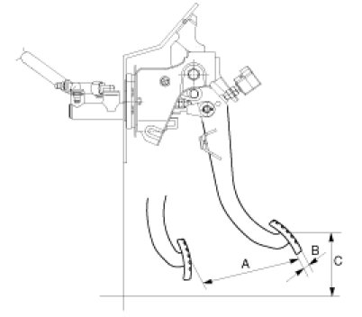
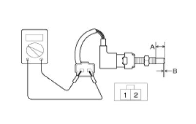
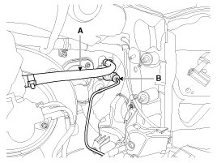
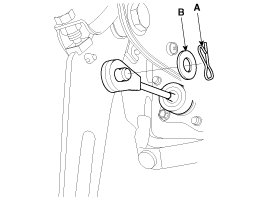
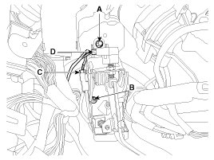
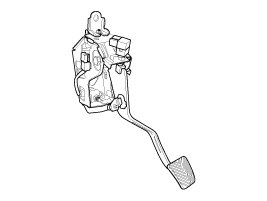

Repair Procedures
Inspection
Clutch Pedal Inspection
1. Measure the clutch pedal height (from the face of the pedal pad to the floor board) and the clutch pedal clevis pin play (measured at the face of the pedal pad.)
Standard value
Stroke (A): 140 ± 0.3 mm (5.5118 ± 0.0118 in.)
Free play (B): 6 - 13 mm (0.2362 - 0.5118 in.)
Height (C): 189.1 mm (7.4449 in.)

Ignition Lock Switch Inspection
1. Disconnect 2P-connector from a ignition lock switch.
2. Disconnect the ignition lock switch. (if you can install a tester with the switch fixed, this step can be omissible)
3. Check for continuity between terminals. (refer to the table below)
NOTE:
- If there is difference between what tested and the table above, replace the ignition lock switch with a new one.
Standard value
Full stroke (A): 12.0 ± 0.3mm (0.4724 ± 0.0118 in.)
ON-OFF point (B): 2.0 ± 0.3mm (0.0787 ± 0.0118 in)

Removal
NOTE:
- Do not spill brake fluid on the vehicle; it may damage the paint if brake fluid does contact the paint, wash it off immediately with water.
1. Remove the battery and ECM.
2. Disconnect the clutch tube (B) and reservoir hose (A) from the clutch master cylinder.

3. Disconnect the push rod from the master cylinder by removing the snap pin (A) and washer (B).

4. Remove the clutch pedal mounting bolt (A) and nuts (B-2ea).
Tightening torque:
(A) 16.7 - 25.5 N.m (1.7 - 2.6 kgf.m, 12.3 - 18.8 lb-ft)
(B) 18.6 - 23.5 Nm (1.9 - 2.4 kgf.m, 13.7 - 17.4 lb-ft)
5. Disconnect the ignition lock switch connector (C) and clutch switch connector (B).

6. Remove the clutch pedal and the master cylinder assembly together.

Installation
1. Installation is in reverse order of removal.
NOTE:
- Perform bleeding air procedure in clutch release cylinder after pouring the brake fluid.